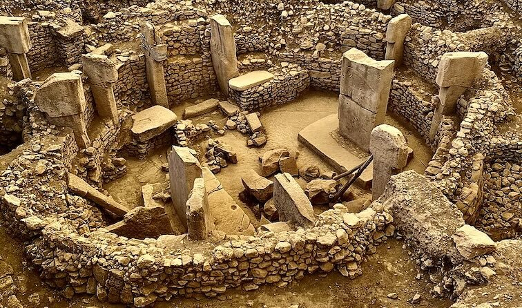

Digital defoliation powerfully reveals terrain, the features hidden beneath vegetation, and many times, the large scale of civilization insights.

Sites of interest are often obscured by dense vegetation that conventional aerial imaging and single-look lidar cannot see through.
High-resolution bare-earth terrain models that strip away vegetation to expose archaeological sites and other subtle, human-made surface features.
Sees beneath canopy by combining several look angles in one pass.
Acadia data channels allow for removal of vegetation returns to produce clean bare-earth DTMs.
Decimeter-scale precision surfaces faint earthworks and structures.
A compact, accessible system for high-resolution low- and mid-altitude collection.
Book a call to scope your project, or request representative point clouds for review.